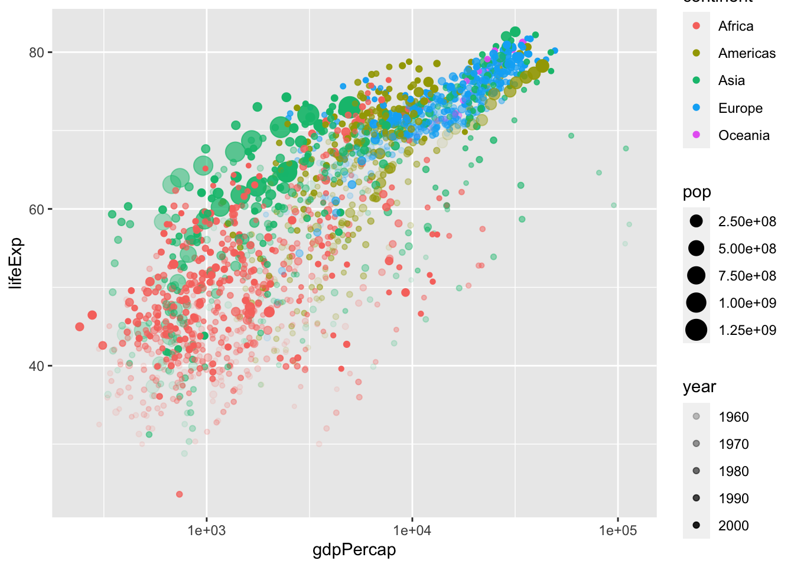
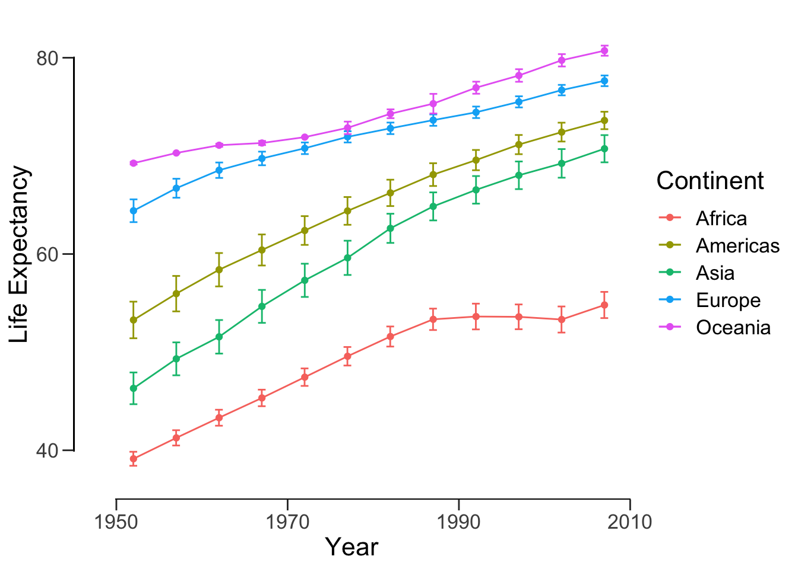
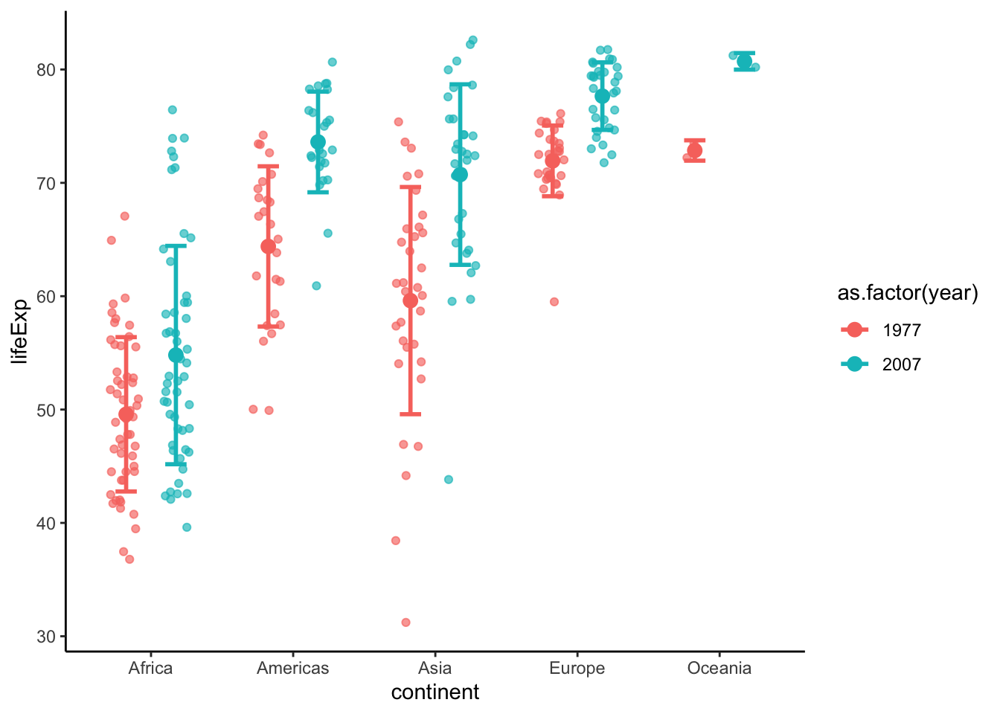
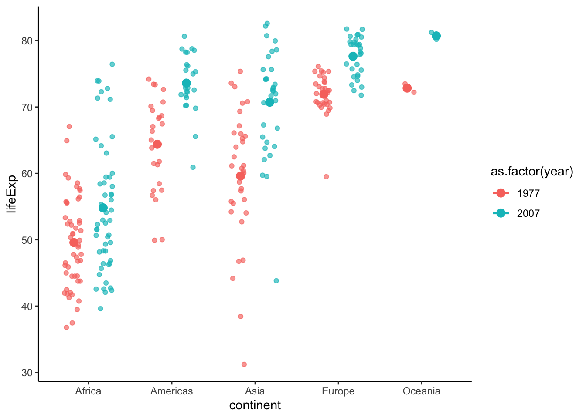
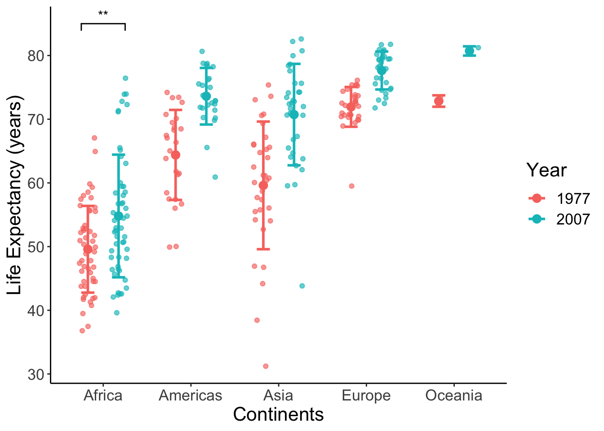
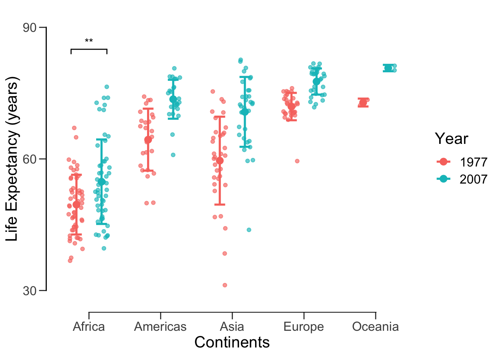
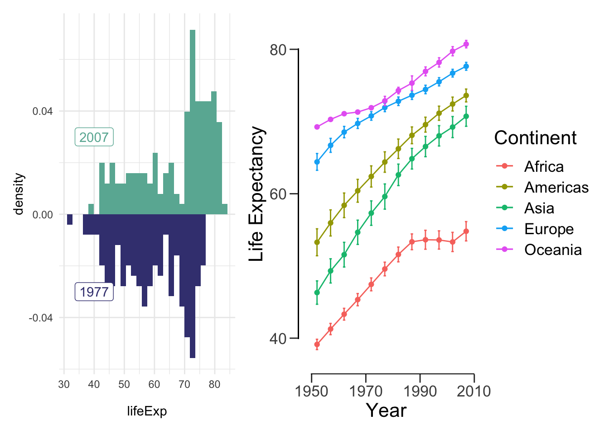
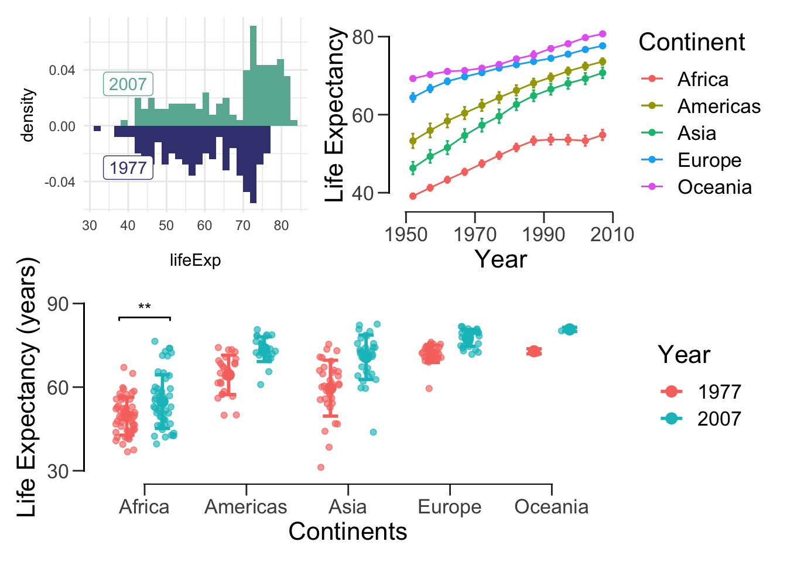
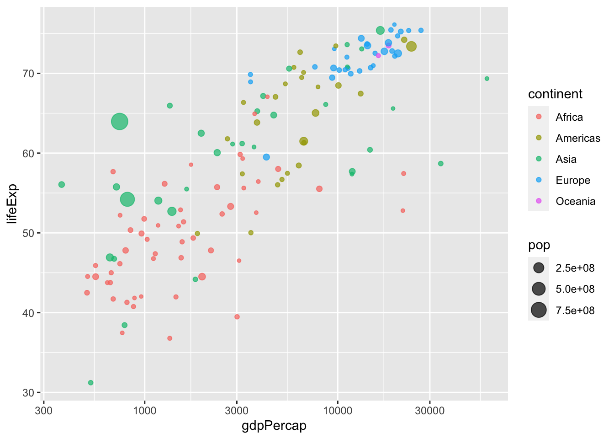
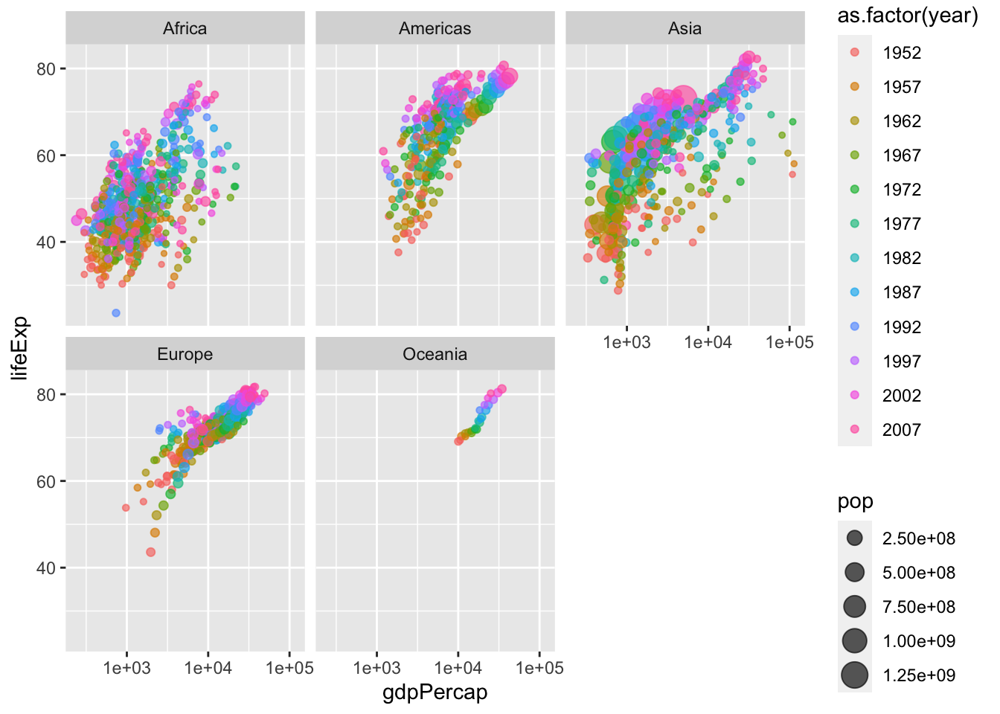

10 Getting publication-ready
As the chapter name suggests, this chapter is all about getting publication-quality plots.
library(tidyverse)
library(gapminder)10.1 Line plot
A line plot is another way to visualize continuous variables. This is particularly useful when
- Your observations change over time and
- You want to demonstrate a causal relationship.
Let’s elaborate on the second point. In the previous case for life expectancy and GDP, we could only observe a correlation, but cannot conclude a causal relationship. In some case, such as carrying out a laboratory experiment or a simulation study, you can precisely manipulate certain independent variables and measure other dependent variables. This way you can argue for a better causal relationship. For example, you can change the concentration of a drug treatment and measure the inhibition effect.
Let’s take a look at the life expectancy of Africa over the years. Let’s first create a scatter plot.
ggplot(data = subset(gapminder, continent == "Europe"),
aes(x = year, y = lifeExp)) +
geom_point()
Since the points can correspond to the countries, we can connect them with lines.
ggplot(data = subset(gapminder, continent == "Europe"),
aes(x = year, y = lifeExp, colour = country)) +
geom_point() +
geom_line(aes(group = country))
Here the group = country specifies that points with the same values for the variable country should be connected in a line.
Oftentimes you want to show line plots with mean values and error bars. Unfortunately, ggplot2 can’t automatically draw error bars – you have to explicitly specify the values. We’re going to address this in the next example.
First, calculate the mean and SEM and save it to a new data frame.
df <- gapminder %>%
group_by(year, continent) %>%
summarise(mean_le = mean(lifeExp), sd=sd(lifeExp), sem = sd(lifeExp)/sqrt(n()))## `summarise()` has grouped output by 'year'. You can override using the `.groups` argument.Next, draw a line plot with this data frame. To draw error bars, we need to specify the upper and lower limits within geom_errorbar().
lineplot <- ggplot(data = df, aes(x = year, y = mean_le, color = continent)) +
geom_line() +
geom_point() +
geom_errorbar(aes(ymin = mean_le-sem, ymax = mean_le+sem),
position = position_dodge(0.05)) # position_dodge() sets length of error bar caps
show(lineplot)
Finally, let’s format the figure nicely.
lineplot <- lineplot + labs(x = "Year", y = "Life Expectancy", color = "Continent") +
theme_classic() + # remove the gray background
theme(text = element_text(size = 16)) # set font size
show(lineplot)
For a cleaner view with offset axis:
lineplot <- lineplot +
theme(axis.line = element_blank(), # hide the default axes
axis.ticks.length = unit(7, 'pt')) +
# specify the breaks of y-axis
scale_y_continuous(breaks=seq(40,80,20), limits=c(35,85), expand=c(0,0)) +
# specify the breaks of x-axis
scale_x_continuous(breaks=seq(1950, 2010, 20), limits=c(1945,2010), expand=c(0,0)) +
# specify the location of the new y-axis
geom_segment(y=40, yend=80, x=1945, xend=1945, lwd=0.5, colour="black", lineend="square") +
# specify the location of the new x-axis
geom_segment(y=35, yend=35, x=1950, xend=2010, lwd=0.5, colour="black", lineend="square")
show(lineplot)ggsave("data/10_pubvis/life_year.png", plot = lineplot)## Saving 7 x 5 in image10.2 Bar plot
10.2.1 Basics
Let’s look at the life expectancy of all continents in 1977 using a bar plot. Notice that instead of using dplyr, we can simply use the base R subset() function. Recall df from the previous section.
ggplot(data = subset(df, year == 1977), aes(x=continent, y=mean_le)) +
geom_col()
Note by default, geom_col takes both x and y while geom_bar takes only x and plots the count on y. Just as before, we can add error bars:
ggplot(data = subset(df, year == 1977), aes(x=continent, y=mean_le)) +
geom_col() +
geom_errorbar(aes(ymin = mean_le - sem, ymax = mean_le + sem), width=0.5,
position=position_dodge(0.05))
We can compare 1977 and 2007 by settingfill = as.factor(year).
p <- ggplot(data = subset(df, year %in% c(1977, 2007)),
aes(x=continent, y=mean_le, fill = as.factor(year))) +
geom_col(position = position_dodge(), color = "black") +
geom_errorbar(aes(ymin = mean_le - sem, ymax = mean_le + sem), width=0.5,
position=position_dodge(0.9))
show(p)
Finally, let’s make this figure publication-ready:
p <- p +
scale_fill_manual(values = c('black', 'white')) +
labs(x = 'Continent', y='Mean life expectancy (years)', fill = 'Year') +
theme_classic() +
theme(text = element_text(size=16)) +
# removes space between bottom of bars and x-axis
scale_y_continuous(expand = c(0, 0))
p
10.2.2 Plotting significance (OPTIONAL)
Next we can run some statistical tests and add significance stars (*) to the plot. We’ll compare if the life expectancy in Africa in 1977 and 2007 has changed.
africa.1977.lifeExp <- gapminder %>% filter(continent == 'Africa', year == 1977) %>% select(lifeExp)
africa.2007.lifeExp <- gapminder %>% filter(continent == 'Africa', year == 2007) %>% select(lifeExp)
t.test(africa.1977.lifeExp, africa.2007.lifeExp)##
## Welch Two Sample t-test
##
## data: africa.1977.lifeExp and africa.2007.lifeExp
## t = -3.195, df = 91.787, p-value = 0.001917
## alternative hypothesis: true difference in means is not equal to 0
## 95 percent confidence interval:
## -8.474086 -1.977145
## sample estimates:
## mean of x mean of y
## 49.58042 54.80604The p-value is 0.001917. Here are common ranges for different p-values: 0 **** 0.0001 *** 0.001 ** 0.01 * 0.05 ns 1. We should use ** in this case. To draw the significance stars, we need the ggsignif package.
# install.packages("ggsignif")
library(ggsignif)
meanLE.77.07 <- p + geom_signif(y_position = 60, xmin = 0.75, xmax = 1.25, # position of the stars
annotations = "**", tip_length = 0.05)
meanLE.77.07
There are more ways to draw the significant stars in R. For example, ggpubr even allows you to run the tests and plot the stars in the same line.
However, I do not encourage you to do so. Manually adding the stars might be a bit tedious (in terms of adjusting the positions and tip length), but you are not as restricted by the package in terms of the tests you can do.
10.3 Box plot
Box plots are extremely versatile. Here are 2 reasons:
- You don’t need to calculate the mean and error for box plots (remember we used
dffor bar plots). - Many high-profile journals ask authors to submit graphs that shows not only the statistical description (mean and error), but also the dots for the raw data. Box plots are well suited for this purpose.
p <- ggplot(data = subset(gapminder, year %in% c(1977, 2007)),
aes(x = continent, y = lifeExp, color = as.factor(year))) +
geom_boxplot(position = position_dodge(0.8))
show(p)
Let’s add the data points. Here I use geom_jitter to avoid overlapping. Please note that position_jitterdodge introduces random noise to the x position of the points to make it easier to read. But since we are plotting against a categorical variable, the exact x position doesn’t matter.
p <- p + geom_point(position = position_jitterdodge(0.4), alpha = 0.65)Use stat_summary show data points and statistics together.
p <- ggplot(data = subset(gapminder, year %in% c(1977, 2007)),
aes(x = continent, y = lifeExp, color = as.factor(year))) +
geom_point(position = position_jitterdodge(0.4), alpha = 0.65) +
theme_classic() +
# adds error bar
stat_summary(fun.data=mean_sdl, fun.args = list(mult=1),
geom="errorbar", width=0.3, position = position_dodge(0.7), size = 1) +
# adds mean pooint to the error bar
stat_summary(fun=mean, geom="point", position = position_dodge(0.7), size = 3)
show(p)
Add asterisks and format the plot.
p <- p +
geom_signif(y_position = 85, xmin = 0.75, xmax = 1.25, annotations = "**", tip_length = 0.02, color = "black") +
labs(x = "Continents", y = "Life Expectancy (years)", color = "Year") +
theme(text = element_text(size = 16)) # make text larger
show(p)## Warning: Computation failed in `stat_summary()`:
## Hmisc package required for this function
We can again offset the axes.
offset_box <- p +
theme(axis.line = element_blank(), # hide the default axes
axis.ticks.length = unit(7, 'pt')) +
# Specify the breaks of y-axis
scale_y_continuous(breaks=seq(30,90,30), limits=c(25,95), expand=c(0,0)) +
# Specify location of x-axis
geom_segment(y=30, yend=90, x=0.4, xend=0.4, lwd=0.5, colour="black", lineend="square") +
# Specify location of y-axis
geom_segment(y=25, yend=25, x=1, xend=5, lwd=0.5, colour="black", lineend="square")
show(offset_box)## Warning: Computation failed in `stat_summary()`:
## Hmisc package required for this function
Now we can save this publication-ready figure.
ggsave('data/10_pubvis/life_year_jitter.png', plot = offset_box)## Saving 7 x 5 in image## Warning: Computation failed in `stat_summary()`:
## Hmisc package required for this function10.4 Histogram and density plot
Since these have been covered extensively in previous labs, I’m going to go through this section rather quickly. The histogram and density plot are great tools for looking at distributions of a single variable:
ggplot(data = subset(gapminder, year == 2007), aes(x = lifeExp)) +
geom_histogram(fill = '#69B3A2')## `stat_bin()` using `bins = 30`. Pick better value with `binwidth`.
ggplot(data = subset(gapminder, year == 2007), aes(x = lifeExp)) +
geom_density(fill = '#69B3A2')
We can also use these plots to compare distributions.
ggplot() +
# 2007 data and label
geom_density(data = subset(gapminder, year == 2007),
aes(x = lifeExp, y = ..density..), fill = '#69B3A2') +
geom_label(aes(x=40, y=0.03, label='2007'), colour = '#69B3A2') +
# 1977 data and label
geom_density(data = subset(gapminder, year == 1977),
aes(x = lifeExp, y = -..density..), fill = '#404080') +
geom_label(aes(x=40, y=-0.03, label='1977'), colour = '#404080') +
theme_minimal()
Perhaps a histogram would be better for our purposes.
hist.07.77 <- ggplot() +
# 2007 data and label
geom_histogram(data = subset(gapminder, year == 2007),
aes(x = lifeExp, y = ..density..), fill = '#69B3A2') +
geom_label(aes(x=40, y=0.03, label='2007'), colour = '#69B3A2') +
# 1977 data and label
geom_histogram(data = subset(gapminder, year == 1977),
aes(x = lifeExp, y = -..density..), fill = '#404080') +
geom_label(aes(x=40, y=-0.03, label='1977'), colour = '#404080') +
theme_minimal()
hist.07.77## `stat_bin()` using `bins = 30`. Pick better value with `binwidth`.
## `stat_bin()` using `bins = 30`. Pick better value with `binwidth`.
10.5 Assembly of multiple figures (OPTIONAL)
Many figures in academic journals include multiple subfigures within a figure.
To assemble many graphs into one figure, usually we use a graphical design software such as Illustrator, Inkscape or even PowerPoint.
If you are able to generate all subfigures within one single R script (so that all the ggplot2 objects are present together), you could go on to use R package patchwork to assemble them into a big figure.
(Please note that this could be a very rare scenario when conducting serious research - Each subfigures may require intense computation and modelling work that are performed with several scripts. They may even come from different people - your teammates and collaborators. You don’t always have access to all te subfigures within one workspace. Most of the time you would still find yourself using graphical design softwares to assemble the figures.)
# install.packages('patchwork')
library(patchwork)Here is a super simple example: just add the plots together! Recall that these variables were saved throughout our lab.
hist.07.77 + lineplot## `stat_bin()` using `bins = 30`. Pick better value with `binwidth`.
## `stat_bin()` using `bins = 30`. Pick better value with `binwidth`.
We can also do something a bit more complicated:
(hist.07.77 + lineplot) / offset_box## `stat_bin()` using `bins = 30`. Pick better value with `binwidth`.
## `stat_bin()` using `bins = 30`. Pick better value with `binwidth`.## Warning: Computation failed in `stat_summary()`:
## Hmisc package required for this function
We can also add spacing between plots:
patch <- (hist.07.77 + plot_spacer() + lineplot) /
(meanLE.77.07 + theme(text=element_text(size=12)))
patch## `stat_bin()` using `bins = 30`. Pick better value with `binwidth`.
## `stat_bin()` using `bins = 30`. Pick better value with `binwidth`.Most figures in papers are annotated. In most cases, plots are combined using a photoshop tool. Labels are usually also added with a photoshop tool. For whatever reason you wish to programmatically add labels, here’s howyou do it:
(hist.07.77 + lineplot) / (meanLE.77.07 + theme(text=element_text(size=12))) +
plot_annotation(tag_levels = 'A')## `stat_bin()` using `bins = 30`. Pick better value with `binwidth`.
## `stat_bin()` using `bins = 30`. Pick better value with `binwidth`.
Note that tag_levels takes:
- ‘1’ for Arabic numerals,
- ‘A’ for uppercase Latin letters,
- ‘a’ for lowercase Latin letters,
- ‘I’ for uppercase Roman numerals, and
- ‘i’ for lowercase Roman numerals.
More often than not, we want all of our figures to have the same dimensions. patchwork makes it easy for us to do so:
aligned_plots <- align_patches(lineplot, scatter_trend, meanLE.77.07, offset_box)
for (p in aligned_plots) {
plot(p)
}That’s all there is to it! If you want more customization options, read the official documentation: https://patchwork.data-imaginist.com/articles/patchwork.html.
10.6 Extras (OPTIONAL)
10.6.1 Choropleth
“The greatest value of a picture is when it forces us to notice what we never expected to see.” –John Tukey
The choropleth is used to display differences in geographical regions using different colours/shades/patterns. To use map data, we need to install maps package.
install.packages("maps")First, let’s load maps and retrieve all of the data from the year 2007.
library(maps)
dat2007 <- gapminder %>% filter(year == 2007)
dat2007 <- dat2007 %>% rename('region' = 'country')Now let’s get the world map data. This is necessary because it contains the longitude and latitudes we need to draw the map
world_map <- map_data("world")
head(world_map)## long lat group order region subregion
## 1 -69.89912 12.45200 1 1 Aruba <NA>
## 2 -69.89571 12.42300 1 2 Aruba <NA>
## 3 -69.94219 12.43853 1 3 Aruba <NA>
## 4 -70.00415 12.50049 1 4 Aruba <NA>
## 5 -70.06612 12.54697 1 5 Aruba <NA>
## 6 -70.05088 12.59707 1 6 Aruba <NA>Whereas gapminder names USA and UK ‘United States’ and ‘United Kingdom’ respectively, world_map names them by their abbreviations. Let’s rename the gapminder data.
dat2007 <- dat2007 %>% mutate(region = fct_recode(region,
'USA' = 'United States',
'UK' = 'United Kingdom'))We’re almost there! Now, we need to merge the data.
life.exp.map <- left_join(world_map, dat2007, by = "region")
head(life.exp.map)## long lat group order region subregion continent year lifeExp pop
## 1 -69.89912 12.45200 1 1 Aruba <NA> <NA> NA NA NA
## 2 -69.89571 12.42300 1 2 Aruba <NA> <NA> NA NA NA
## 3 -69.94219 12.43853 1 3 Aruba <NA> <NA> NA NA NA
## 4 -70.00415 12.50049 1 4 Aruba <NA> <NA> NA NA NA
## 5 -70.06612 12.54697 1 5 Aruba <NA> <NA> NA NA NA
## 6 -70.05088 12.59707 1 6 Aruba <NA> <NA> NA NA NA
## gdpPercap
## 1 NA
## 2 NA
## 3 NA
## 4 NA
## 5 NA
## 6 NAFinally, we can plot the data. We specify group to draw each country individually.
# grey means no gapminder data
ggplot(life.exp.map, aes(x=long, y=lat, group = group)) +
geom_polygon(aes(fill = lifeExp), color = "white") +
scale_fill_viridis_b(option='D') +
theme_bw()
10.6.2 Animations
While we covered the most relevant data visualizations for your project, we’ve barely scratched the surface of what R can do. For example, you can create animations. Let’s install the gganimate package.
install.packages('devtools')
devtools::install_github('thomasp85/gganimate')Next, load the package:
library(gganimate)## No renderer backend detected. gganimate will default to writing frames to separate files
## Consider installing:
## - the `gifski` package for gif output
## - the `av` package for video output
## and restarting the R sessionFinally, we can create the plot! This might take a while, but I promise it will be worth the wait!
ggplot(gapminder, aes(gdpPercap, lifeExp, size = pop, col = country)) +
geom_point(alpha = 0.7, show.legend = F) +
scale_colour_manual(values = country_colors) +
scale_x_log10() +
scale_size(range = c(2, 12)) +
facet_wrap(~continent) +
theme_bw() +
theme(panel.grid = element_blank()) +
# here is the animation code
labs(title = 'Year: {frame_time}', x = 'GDP per capita', y = 'Life expectancy (years)') +
transition_time(year) +
ease_aes('linear')## Warning: No renderer available. Please install the gifski, av, or magick package
## to create animated output## NULL10.7 Additional resources
I highly recommend you read through these websites:
- From Data to Viz: https://www.data-to-viz.com
- Includes the visualization and the type of data it corresponds to.
- Patchwork: https://github.com/thomasp85/patchwork
- For creating multi-plot figures.
- Caveats: https://www.data-to-viz.com/caveats.html
- Pitfalls to avooid when creating figures.
- The Python Graph Gallery: https://python-graph-gallery.com
- If you’re more comfortable with Python. Includes the visualization and code to creat it.

Data visualizations for various data types. Check out https://www.data-to-viz.com/ for an interactive version of this chart!